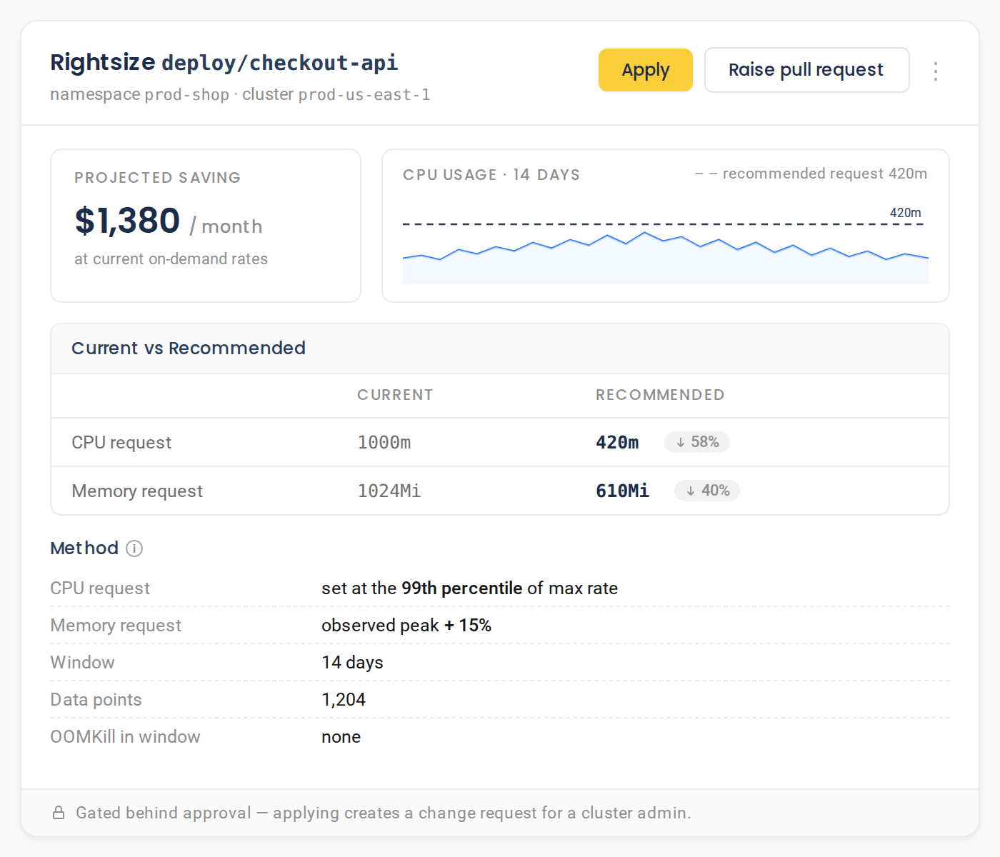
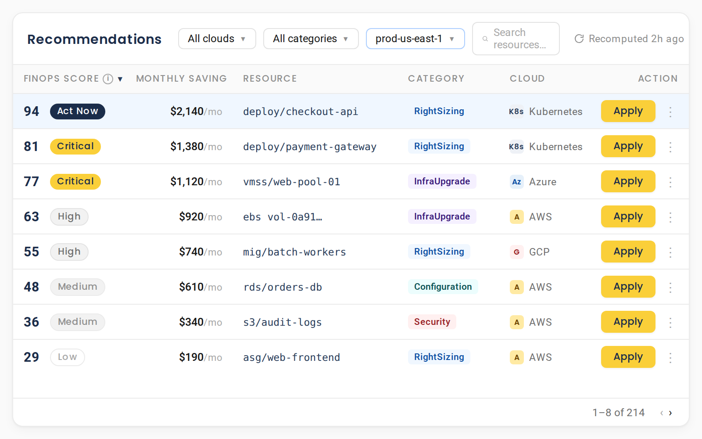
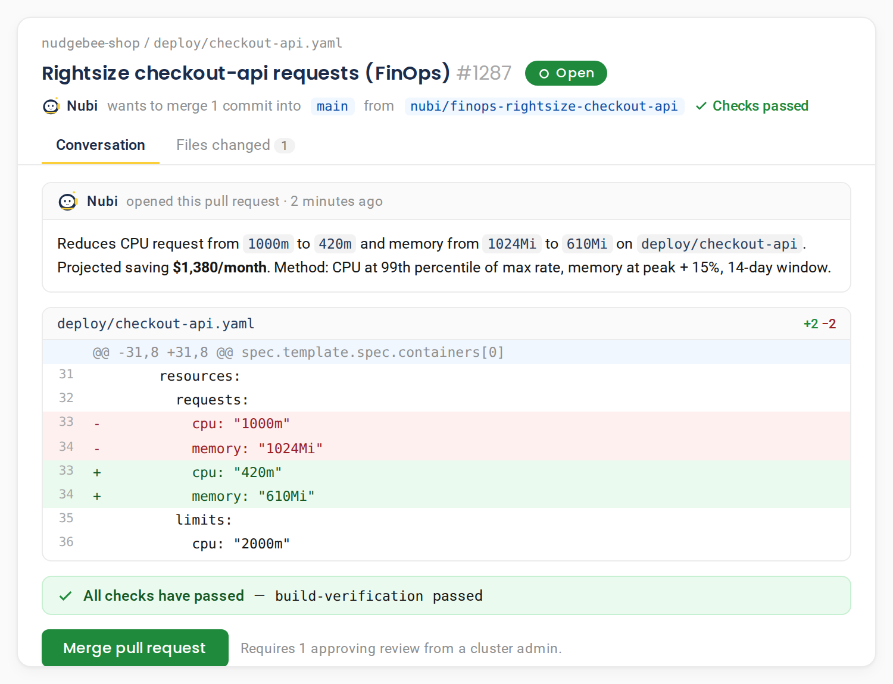
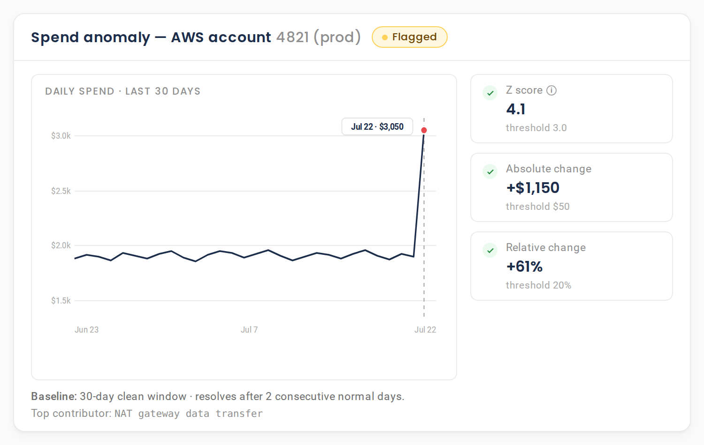

Find the waste. Show the arithmetic. Raise the pull request.
A dashboard shows the number. An autopilot changes your infrastructure behind a black box. NudgeBee's AI FinOps does neither: it ranks every finding by the dollars it frees, shows the exact method behind each one so it survives review, and lands the fix as a pull request you approve.
AWS, Azure and GCP · Kubernetes rightsizing · Self-hosted · Free forever tier
What is AI FinOps?
AI FinOps is the use of autonomous agents to find and fix cloud waste, rather than only report it. NudgeBee scans AWS, Azure, GCP and Kubernetes against 510 optimization rules, scores every finding by dollar impact, attaches the exact remediation, and applies it as a cloud API change or a pull request once approved.
Visibility is solved. The bill still went up.
Most FinOps tools stop at showing you the number. The work of deciding what to change, and actually changing it, is still manual.
-
Visibility
Dashboards did not help enough
Dashboards, tags and allocation reports tell you the bill went up and roughly where. Nobody disputes the number. The work of deciding what to change, and then actually changing it, is still manual and still sitting with an engineer who has other work.
-
No arithmetic
Recommendations without a method
The recommendations that exist arrive without arithmetic. "Rightsize this workload" with no stated method is a recommendation an engineer cannot defend in review, so it does not get applied, and the finding ages until nobody trusts it.
-
Knowing vs doing
A backlog nobody has time for
The gap is between knowing and doing. Every FinOps team has a backlog of accepted recommendations nobody has had time to implement. The savings are theoretical until something raises the pull request.
510 rules for cloud and Kubernetes cost optimization
First-party cloud savings are folded in and normalised to one dollar and severity model, so you are not reconciling four consoles.
AWS rules, the deepest coverage of the three clouds.
Azure rules across cost, security and configuration.
GCP rules in the same normalised model.
Generic rules that apply across every provider.
Four categories, five severities
- RightSizing
- Security
- InfraUpgrade
- Configuration
First-party savings are folded in from AWS Compute Optimizer, Cost Optimization Hub, Cost Explorer (Reserved Instances and Savings Plans) and Trusted Advisor; Azure Advisor; and GCP Recommender.
Severity follows the money
- High$100 per month or more
- Medium$20 per month or more
AWS is the deepest coverage of the three clouds, which the rule counts above reflect honestly.

Every recommendation shows its working
No competitor publishes their method. Every parameter here is exact, so a recommendation is defensible in review.
-
Vertical rightsizing, CPU and memory
Derived from KRR. CPU request set at the 99th percentile of max rate. Memory set at observed peak plus 15%, or plus 25% where an OOMKill occurred. Requires at least 50 data points over a two week window, and is OOMKill-aware.
-
Replica rightsizing, horizontal
An LSTM forecast takes 24 steps of input and projects a 168 step, seven day horizon, so replica counts are set against predicted demand rather than last week's peak.
-
Cluster node fleet
A cost-minimising integer linear program, solved with PuLP, chooses the cheapest instance mix that still satisfies CPU and memory demand across the fleet.
-
Persistent volumes
A PFSS90 storage trend formula projects growth, priced at $0.10 per GB-month with a 1.3x safety margin.
Also covered: spot migration, priced against on-demand, and abandoned workload detection on a seven day window.
A single ranked inbox, not four dashboards
A ranked queue means the team works the top of the list, instead of debating which console to trust.
Every finding gets a FinOps Score from 0 to 100, recomputed every six hours, so the queue reflects what is worth the most right now.


Three ways a fix lands
The remediation is attached to the finding. How it lands depends on the resource, and every path is gated behind approval.
-
A cloud API change
For supported services on AWS, Azure and GCP, the fix is applied directly through the provider API.
-
A live Kubernetes patch
Rightsizing and configuration changes are applied to the deployment in your cluster.
-
A pull request
Raised automatically against GitHub or GitLab, which is the path most teams running GitOps will want.
Every apply is gated behind approval, the same model as the AI SRE assistant. Cloud API apply is available for major compute and database services.
FinOps automation, from recommendation to remediation
The gap between a finding and a fix is where FinOps automation either exists or does not. Here it closes inside the same queue, and nothing skips the approval step.
Most AI FinOps tools stop at the ranked list. Agentic FinOps means the agent carries a finding all the way to a change you approve, instead of leaving it in a backlog nobody has time for.
Before it applies a change, it scores the blast radius from the live dependency graph and auto-applies only what is safe. Everything else waits for your approval.
Weighing the wider market first? Compare the cloud automation tools and cost optimization platforms, and which of them execute a fix rather than filing it.
The finding carries the fix
Every ranked recommendation arrives with the exact change attached and the method behind it published, not a note to go and investigate.
The fix lands where it belongs
A cloud API change, a live Kubernetes patch, or a pull request raised against GitHub or GitLab for the teams running GitOps.
It runs without being chased
A recommendation poller runs every 180 seconds, so a new finding reaches a triggered runbook without anyone re-running a report. Auto-Pilot takes the same path on a schedule.
NudgeBee carries each recommendation to a fix as durable, approval-gated runbook automation, and Auto-Pilot applies the routine ones on a schedule with dry-run and guardrails.
It tells you the day the spend changed, not at month end
Statistical detection on cloud spend, tuned to stay quiet. A spike must clear three thresholds at once, so a single noisy day does not page anyone.
- A 30 day clean baseline.
- Flags when Z is 3.0 or greater, the change is at least $50 in absolute terms, and at least 20% in relative terms. All three must hold.
- Resolves automatically after two consecutive normal days.
Separately, Kubernetes metric anomalies use three swappable engines: IsolationForest (1% contamination, 100 estimators, the default), DBSCAN, and Z-score at 3 sigma, across CPU, memory, latency, error rate and replicas.

One data model across AWS, Azure, GCP and Kubernetes
Kubernetes cost optimization and multi-cloud cost management share one collector, one data model and one recommendation taxonomy, so AWS cost optimization and Azure cost optimization sit in the same queue.
One collector, one taxonomy
One collector, one data model and one recommendation taxonomy across all three clouds, plus Cloud Foundry.
Spot versus on-demand
Node hardware, capacity and placement are read directly, with spot versus on-demand detection across Karpenter, EKS, AKS, GKE and Spotinst.
OpenCost allocation
Kubernetes cost allocation is powered by OpenCost, running in your own cluster.
Spend analytics
Top 5 accounts, top 20 services, and week over week movement in one view.
Chargeback and showback
CSV and Excel export for chargeback and showback, so finance gets what it needs.
Named cloud parity
AWS cost optimization, Azure cost optimization and GCP, plus Kubernetes cost allocation, in the same model.
Reads your existing cost and observability stack in place. Browse all 78 integrations.
Your cost data does not leave your environment
For a FinOps buyer, "your billing data stays in your account" is a real objection-handler. So here it is plainly.
- Self-hosted in your own cluster. Zero telemetry.
- Billing and usage data is queried in place. Nothing is shipped to a third party vendor.
- Outbound AI requests are scanned for secrets before they reach any model, and can be redacted or blocked.
- Credentials encrypted at rest with AES-256-GCM.
- Least-privilege AWS onboarding using STS AssumeRole with an External ID.
- Embeddings can run fully on-device, so air-gapped deployment is viable.
- Readable source, free Community edition.
Frequently asked questions
For the engineer who owns the bill and the leader being asked why it went up.
Book a DemoAI FinOps is one of four assistants on the same platform
One platform, one knowledge graph. Add another assistant with no new install and no re-integration.

Check it against your own bill.
Free forever. Self-host at any scale, or run 2 clusters or cloud accounts free on Cloud SaaS. Nothing leaves your environment. No credit card.